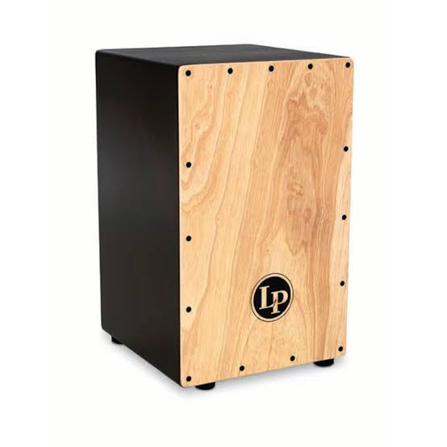

El cajón peruano es un instrumento de percusión de origen peruano que se ha popularizado en todo el mundo gracias al flamenco y la música acústica. Se toca sentado sobre él, golpeando la cara delantera.
El cajón peruano es un instrumento de percusión originario del Perú. Surgió durante los siglos XVIII y XIX entre las comunidades afroperuanas. Se cree que los esclavos africanos, al no tener acceso a sus instrumentos tradicionales, comenzaron a utilizar cajas de madera y cajones de transporte para crear ritmos musicales. Con el tiempo, estos cajones fueron adaptados y mejorados hasta convertirse en un instrumento musical reconocido por su sonido único. Actualmente es considerado uno de los instrumentos más representativos de la música peruana y es Patrimonio Cultural de la Nación en Perú.